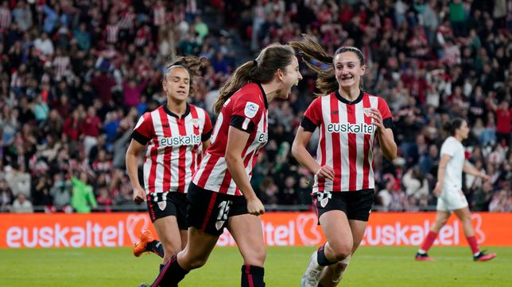
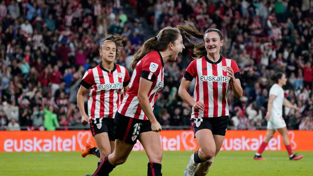

- Posicion: Centrocampista
- Altura: 165 cm
- Fecha de Debut 06/06/2021
- Fecha de Nacimiento 09-09-2003
- Lugar de Nacimiento Bilbo (Bizkaia)
Clara Pinedo
Con buena visión de juego desde la posición de mediapunta, Clara también puede actuar en otras posiciones ofensivas. La bilbaína, habitual en las categorías inferiores de la selección española, se proclamó campeona del Mundo sub-20 y del Europeo sub-19 en 2023. Debutó como leona en junio de 2021 ante el Levante en Buñol. Llegó a Lezama en la 2019 para jugar con el filial y en la campaña 2022-2023 da el salto definitivo al primer equipo. Ese año se convierte en la pichichi zurigorri.
 
